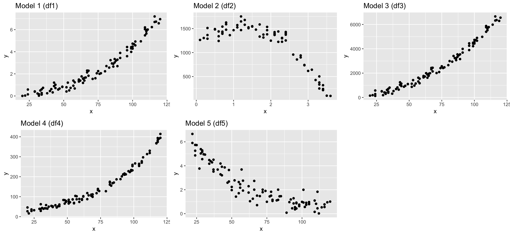
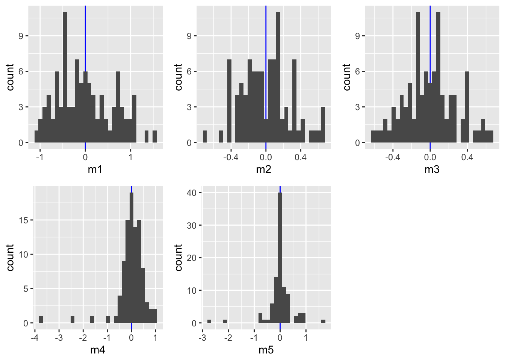
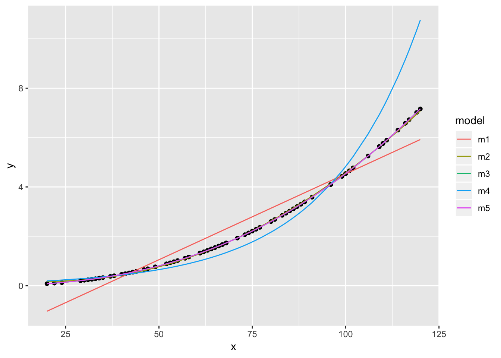
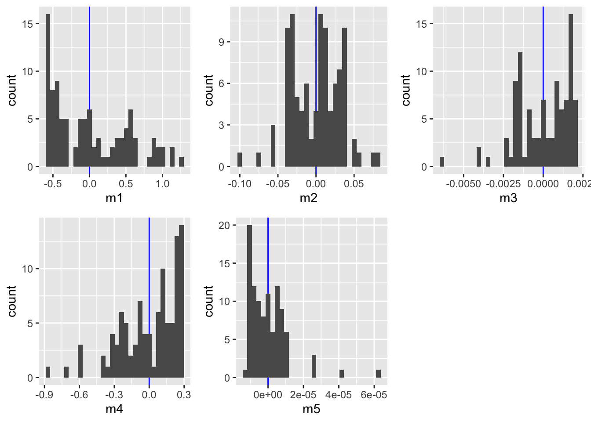

Lecture 14
Exercise: Find the ‘true model’
The exercise given in lecture 14 (slide 76) was the following:

I generated different dataframes where the Y variable was modelled as a specific function of X plus some random noise. Load the datasets and see what objects you loaded with ls():
load("data/find_model.R")
ls()## [1] "df1" "df1_nonoise" "df2" "df2_nonoise" "df3"
## [6] "df3_nonoise" "df4" "df4_nonoise" "df5" "df5_nonoise"str(df1)## 'data.frame': 96 obs. of 2 variables:
## $ x: int 49 99 61 109 114 24 73 110 75 66 ...
## $ y: num 0.839 4.419 1.307 6.042 6.232 ...You should see 10 dataframes, each containing an x and y variable. Try to find the ‘true’ models for df1, df2, df3, df4, and df5 by fitting different model families and compare their performance
- using the AIC (with function
AIC(model1, model2, model3,..)) and - plotting the predicted values to the observed ones and the residual histograms.
Once you think you found it, apply your models on the dataframes that do not contain the random noise (e.g. df1_nonoise for df1) and compare results.
Example code for model 1
Apply models to the data with noise
dat <- df1 # (simply replace here df1 with df1_nonoise or df2, etc. later)
dat <- dat %>% mutate(y_log = log(y+0.00001),
x_log = log(x))
m1 <- lm(formula = y ~ x, data = dat)
m2 <- lm(formula = y ~ poly(x, 2), data = dat)
m3 <- lm(formula = y ~ poly(x, 3), data = dat)
m4 <- lm(formula = y_log ~ x, data = dat)
m5 <- lm(formula = y_log ~ x_log, data = dat)
# The AIC can only be compared with related models --
# (Y variables have to be on the same scale):
# here untransformed Y:
AIC(m1,m2,m3)## df AIC
## m1 3 185.24425
## m2 4 37.56960
## m3 5 34.61143# here transformed Y:
AIC(m4,m5)## df AIC
## m4 3 179.5523
## m5 3 144.8651# Partition model: predicted values --
dat2 <- dat %>% spread_predictions(m1,m2,m3,m4,m5) %>%
# to compare all models at the same scale, back-transform the log-model predictions
mutate(m4 = (exp(m4) - 0.00001),
m5 = (exp(m5) - 0.00001)) %>%
gather(m1:m5, key = "model", value = "pred")
dat %>% ggplot(aes(x,y)) + geom_point() +
geom_line(data = dat2, aes(y = pred, colour = model))
# Partition model: residuals --
p <- dat %>% spread_residuals(m1,m2,m3,m4,m5) %>%
ggplot() + geom_vline(xintercept = 0, colour = "blue")
p1 <- p + geom_histogram(aes(x=m1))
p2 <- p + geom_histogram(aes(x=m2))
p3 <- p + geom_histogram(aes(x=m3))
p4 <- p + geom_histogram(aes(x=m4))
p5 <- p + geom_histogram(aes(x=m5))
gridExtra::grid.arrange(grobs = list(p1,p2,p3,p4,p5),
ncol= 3)
The AIC indicates best performances for models m3 (polynomial of order 3) and m5 (X and X both log-transformed). Also the prediction plots and the residual plots support this. In fact, the prediction plot does not show a big difference between both models. The residual plots, on the other hand, might provide some support for m5 as a high number of y values deviate little from their predictions.
To really find out which model has the true underlying function, used to create this dataset, we need to apply the models on the dataset without noise:
Apply models to the data without noise
dat <- df1_nonoise
dat <- dat %>% mutate(y_log = log(y+0.00001),
x_log = log(x))
m1 <- lm(formula = y ~ x, data = dat)
m2 <- lm(formula = y ~ poly(x, 2), data = dat)
m3 <- lm(formula = y ~ poly(x, 3), data = dat)
m4 <- lm(formula = y_log ~ x, data = dat)
m5 <- lm(formula = y_log ~ x_log, data = dat)
# untransformed Y:
AIC(m1,m2,m3)## df AIC
## m1 3 156.3179
## m2 4 -397.3983
## m3 5 -990.3074# transformed Y:
AIC(m4,m5)## df AIC
## m4 3 12.96286
## m5 3 -1986.17114# Partition model: predicted values --
dat2 <- dat %>% spread_predictions(m1,m2,m3,m4,m5) %>%
mutate(m4 = (exp(m4) - 0.00001),
m5 = (exp(m5) - 0.00001)) %>%
gather(m1:m5, key = "model", value = "pred")
dat %>% ggplot(aes(x,y)) + geom_point() +
geom_line(data = dat2, aes(y = pred, colour = model))
# Partition model: residuals --
p <- dat %>% spread_residuals(m1,m2,m3,m4,m5) %>%
ggplot() + geom_vline(xintercept = 0, colour = "blue")
p1 <- p + geom_histogram(aes(x=m1))
p2 <- p + geom_histogram(aes(x=m2))
p3 <- p + geom_histogram(aes(x=m3))
p4 <- p + geom_histogram(aes(x=m4))
p5 <- p + geom_histogram(aes(x=m5))
gridExtra::grid.arrange(grobs = list(p1,p2,p3,p4,p5),
ncol= 3)
m5 shows a slightly better fit than m3 indicating that the underlying function is an exponental function of the form \(Y=aX^{b}\). Note, however, that fitting a model with a polynomial of order 3 would be be similarly adequate, but is less simple.
For comparison:
# This is the true underlying function
set.seed(123)
x <- sample(20:120, size = 100,
replace = TRUE)
y_noise <- rnorm(100, 0, 0.3)
a <- exp(-10)
b <- 2.5
y <- a * x^b + y_noise
m5_comp <- lm(log(y) ~ log(x))
coefficients(m5_comp)## (Intercept) log(x)
## -10.662521 2.648546Solution of all 5 models
Model 1: \(Y_{i}=aX_{i}^{b}+\epsilon_{i}\) , with a = exp(-10), b = 2.5
Model 2: \(Y_{i}=a+b1X_{i}+b2X_{i}^{2}+b3X_{i}^{3}+\epsilon_{i}\) , with a = 1250, b1 = 400, b2 = -100, b3 = -30
Model 3: \(Y_{i}=a+b1X_{i}+b2X_{i}^{2}+\epsilon_{i}\) , with a = 100, b1 = -5, b2 = 0.5
Model 4: \(Y_{i}=ae^{bX_{i}}+\epsilon_{i}\) , with a = 20, b = 0.025
Model 5: \(Y_{i}=ae^{-bX_{i}}+\epsilon_{i}\) , with a = 10, b = -0.025